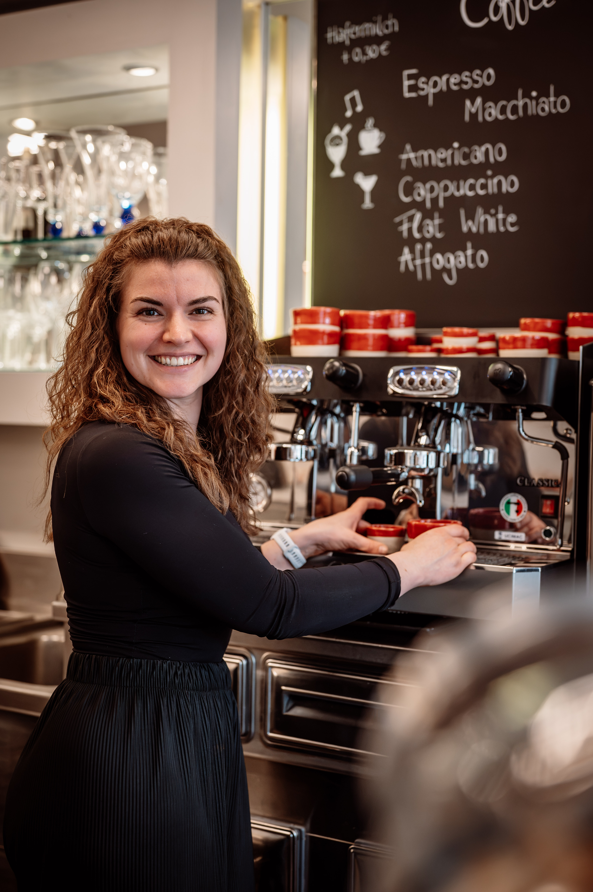
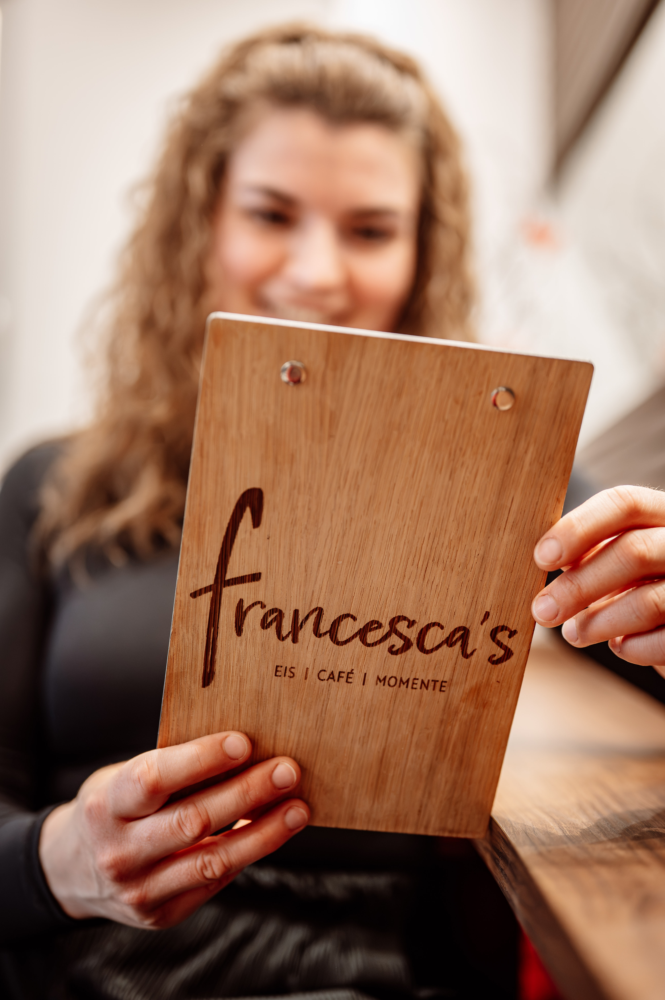

Hi, ich bin Franzi
Ich habe im Maerz 2026 die Eisdiele von Jutta Da Col uebernommen und mich selbststaendig gemacht. Als studierte Sozialpaedagogin und Musikerin habe ich wohl keine Frage oefters gestellt bekommen als diese hier: Wie bist du denn bitte auf die Idee gekommen, eine Eisdiele zu uebernehmen?
In einem persoenlichen Gespraech wuerde ich wahrscheinlich ausschweifen. Die kurze Antwort darauf ist: Es war die Mischung aus der Chance auf einen Neuanfang nach meinem Umzug von Salzburg zurueck in die Heimat, Frust und vielen Lebensfragen, dem Wunsch nach Selbststaendigkeit und der Information, dass das Al Castello verkauft werden soll.
Zur richtigen Zeit am richtigen Ort? Vielleicht. Was dich im Francesca's erwartet: altbekannte und neue Eiskreationen, leckere Kaffeespezialitaeten und ein Ort fuer Begegnung, laue Sommernaechte, Musik und kleine Events.
Ich freu mich auf deinen Besuch!

Mitten in Weikersheim
In der Hauptstrasse 13 bleibt die Eisdiele ein vertrauter Treffpunkt, bekommt aber eine neue Handschrift: persoenlich, offen und mit viel Liebe fuer Eis, Kaffee und gute Momente.
Francesca's auf Instagram{kind=link}
{kind=link}
Infos & News
Der Laden ist bis einschliesslich Samstag, 10.10.2026 geoeffnet.
Wann und wie genau es weitergeht, wird frueh genug bekannt gegeben.
Eis fuer deine Feier?
Egal ob Kindergeburtstag, Geburtstag, Hochzeit, Jubilaeum, Strassenfest oder ein ganz normaler Freitag im Buero: Fuer Eisanfragen und Informationen erreichst du mich unter:
0152 384 77090Oeffnungszeiten
Meine Oeffnungszeiten variieren das Jahr ueber je nach Jahreszeit. Aktuell gelten ab September bis Saisonende im Oktober:
{kind=link}
{kind=link}
{kind=link}
{kind=link}
{kind=link}
{kind=link}
{kind=link}
{kind=link}
{kind=link}
{kind=link}
{kind=link}
{kind=link}
{kind=link}